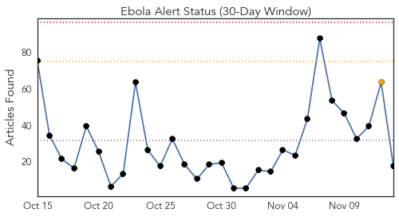
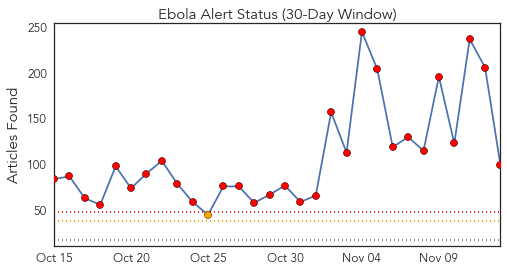
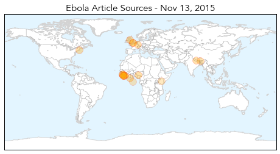
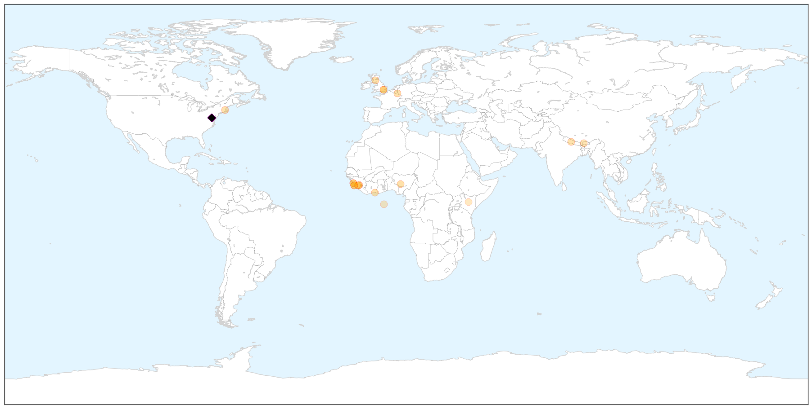
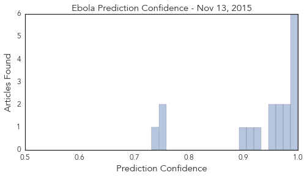

Ebola
30-Day Web Trend
0 alerts, 1 warnings

30-Day Twitter Trend
25 alerts, 0 warnings

Article Locations

X

Article Confidences
Top Articles:
- 1.000
- West Africa: Ebola Virus Disease Outbreak
- 0.999
- Low-income Brits agree to be injected with experimental Ebola vaccine for barely enough money to pay one month's rent
- 0.996
- Ask Well: Ebola and Sex
- 0.996
- When Will The True Ebola Heroes Be Recognised?
- 0.991
- West Africa's Ebola outbreak prompts changes in I.Coast cuisine
- 0.989
- As Ebola Leaves West Africa, Why Are Resources Leaving Too?
- 0.984
- Scottish Ebola nurse 'recovering'
- 0.976
- 1St test for Ebola on Brazilian coming from Guinea comes back negative
- 0.964
- Building defences against future Ebola outbreaks
- 0.961
- Ebola outbreak: A system that failed
- 0.960
- Love in the time of Ebola
- 0.958
- What is it like to do Ebola field work?
- 0.920
- Building Defences Against Future Ebola Outbreaks
- 0.909
- Ebola nurse Pauline Cafferkey released from isolation after meningitis treatment
- 0.894
- Royal Centre for Disease Control inaugurated
- 0.751
- Liberian VP Thanks Minnesotans for Goodwill During Ebola Crisis
- 0.748
- Britain ends military support for Ebola fight in West Africa
- 0.732
- Kenya, Nigeria awarded Institute of Human Virology grants
Top Tweets:
- 0.980
- Sierra Leone: Ebola outbreak officially over - https://t.co/Qrwzd43mVV ebola
- 0.977
- Ebola virus - https://t.co/3YtvkRiFss ebola
- 0.964
- Ebola remains in Guinea as Liberia and Sierra Leone Remain Free of Virus - https://t.co/XdrL3ueTXZ ebola
- 0.961
- UK nurse with Ebola meningitis released from isolation - https://t.co/tMgXxJ54R3 ebola
- 0.958
- Sierra Leone free of Ebola epidemic - https://t.co/RJnzKsrYqJ ebola
- 0.950
- Improving public health messaging on Ebola - https://t.co/p0UhHPLFgn ebola
- 0.935
- Ebola! West African Refugee admitted with Ebola! hospital closes down!!!!! https://t.co/KooMFiErYo
- 0.920
- How tourism can help Sierra Leone's recovery from Ebola - https://t.co/oPnZ1XQJCD ebola
- 0.909
- Hospital releases Scottish Ebola nurse - https://t.co/6KaFqlVKXg ebola
- 0.904
- Nurse recovers from 2nd Ebola illness - https://t.co/qbJeFYzHff ebola
- 0.901
- Hospital releases nurse who suffered Ebola complication - https://t.co/rVQc4X84Fn ebola
- 0.901
- Ebola outbreak: A system that failed - https://t.co/hbqRQRrkFI ebola
- 0.899
- Ebola outbreak: A system that failed - Harvard Gazette https://t.co/UtiWgk0ziD ebola EVD
- 0.898
- Sierra Leone is Ebola-free - https://t.co/1QowCOHTDJ ebola
- 0.885
- How tourism can help Sierra Leone's recovery from Ebola - The Independent https://t.co/SIqYKgEcBy ebola EVD
- 0.873
- ACP Group welcomes Sierra Leone's ebola-free status - https://t.co/4wASvRh9Yb ebola
- 0.868
- Nanotechnology Ebola sensor - https://t.co/A5utAomZt3 ebola
- 0.868
- Ebola - https://t.co/ocPerIOhak ebola
- 0.866
- Sierra Leone Says Bye-Bye To Ebola With Rap Song And Hip Dance Moves - https://t.co/EpaXcRwE0l ebola
- 0.864
- Rolf Harris 'Ebola Ward Visit' After Reports Of Admittance To Stoke-On-Trent Hospital - https://t.co/LfjOQOLPex ebola
- 0.859
- This is Nubia MSF's last-known Ebola patient in Conarky - https://t.co/GRfzBJJals ebola
- 0.859
- Britain ends military support for Ebola fight in West Africa - https://t.co/y03wfJUO2s ebola
- 0.852
- Scottish Nurse All Clear From Ebola - https://t.co/BiNw9xJuHA ebola
- 0.851
- Sierra Leone officially declared 'Ebola free' - https://t.co/Vvw9qErRfP ebola
- 0.846
- British Ebola Nurse Released From Isolation In - https://t.co/RIwlCWGydV ebola
- 0.845
- Scottish Nurse with Second Ebola Infection Recovering - https://t.co/av6gLKtZV5 ebola
- 0.840
- Exxon to drill offshore post-Ebola Liberia - https://t.co/MdiwiAc8lB ebola
- 0.840
- EBOLA!!!! BREAKING!!!!! REFUGEE WITH EBOLA HOSPITAL CLOSES https://t.co/zBbfJ7Tj7N
- 0.839
- Ghana FDA approves vaccine for Ebola clinical trials - https://t.co/c7Mf2ttNLa ebola
- 0.838
- EBOLA!!!! BREAKING! HOSPITAL CLOSES REFUGEE ADMITTED WITH EBOLA https://t.co/zBbfJ7Tj7N
- 0.823
- Sierra Leone Celebrates Kicking Out Ebola With Rap Song and Catchy Dance - https://t.co/0oH2QZ4E3F ebola
- 0.822
- CORRECTED-Exxon Mobil to drill offshore post-Ebola Liberia - Reuters https://t.co/Fqhmbjao7q ebola EVD
- 0.821
- Nurse Cafferkey Released from Hospital after Bout with Ebola Relapse - https://t.co/H8JrOidQnz ebola
- 0.821
- Brazilian checked for Ebola - https://t.co/XuOzHmG6TW ebola
- 0.819
- Baby Nubia the last known Ebola patient in Guinea being treated by MSF - https://t.co/CY6ieGzn35 ebola
- 0.817
- Woman in Africa Survives Double Whammy of Ebola Stroke - Yahoo News https://t.co/uVzCn6UMk9 ebola EVD
- 0.810
- British nurse Pauline Cafferkey defeats Ebola - again - Medical News Today https://t.co/H6I6UqDjFR ebola EVD
- 0.805
- Florida International University Researchers Propose Rapid Ebola Test Using Nanotechnology - https://t.co/Hcv1oLf2kT ebola
- 0.798
- Ebola trials to resume as FDA approves vaccine - https://t.co/MvUhs2s6mn ebola
- 0.798
- CORRECTED-Exxon Mobil to drill offshore post-Ebola Liberia - https://t.co/6ULYjVIlYY ebola
- 0.790
- Parliament endorses Ebola vaccine trial - https://t.co/X4Cz0R24nf ebola
- 0.786
- From Ebola survivor to motherhood - https://t.co/tyldaP9X98 ebola
- 0.780
- Building Defences Against Future Ebola Outbreaks - https://t.co/aK0ERPZVJn ebola
- 0.776
- Brazilian man tests negative for Ebola after trip to Guinea - Reuters https://t.co/3ue9vfoQc2 ebola EVD
- 0.763
- the cost of refugees with diseases!! ebola and other diseases building new ebola treatment centers infectious
- 0.761
- Well | Ask Well: Ebola and Sex - https://t.co/useKTrtRxE ebola
- 0.761
- Brazillian man tests negative for Ebola after trip... - https://t.co/hQCtuBBGoG ebola
- 0.759
- Scottish ebola nurse makes full recovery - https://t.co/Oqeie4J93O ebola
- 0.751
- Faith Leaders fight Ebola - https://t.co/s2a1343OZH ebola
- 0.749
- A “bottom” up approach to treating Ebola patients - https://t.co/0ncG0l3xxL ebola
Showing top 50 tweets...